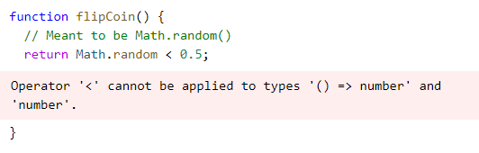

Unlike Java, Javascript doesn't provide any ways to tell what type of object you have created and are working with. There's no way to tell what methods you can call on an object without just attempting it. This can get annoying.
Static Type Checking
Typescript is a static type-checker that will check your variables as you write them, so you don't constantly have to run your code and hope you catch all of the errors. Calling a method on a variable that does not have that method will result in an error before running the code.
Non-Exception Failures
Sometimes, javascript won't throw an exception on some things that might be considered errors. Such as returning Undefined when calling variables property that does not exist. In this case, typescript would produce an error, as it is assumed the user shouldn't be able to access properties that do not exist.
Typescript will also throw errors on typos,
uncalled functions,

and basic logic errors.
TypeScript Compiler
The typescript compiler, or tsc, can be used to compile typescript code to output it as a javascript file.
The typescript compiler allows for a lot more strictness and protection against errors. For more information on the typescript compiler, please visit:
https://www.typescriptlang.org/docs/handbook/2/basic-types.html